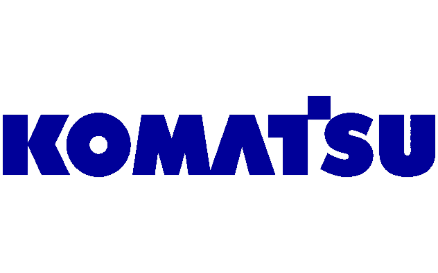

Komatsu India Private Limited (Jan 2017 – Present)EngineerCaterpillar India Private Limited (Feb 2016 – Jan 2017)Procurement Co-coordinator Procuring parts such as ECM’s, Connectors, Sheet Metal Components, Solenoids & Valves for R & D Section
Procured parts for IT ( Software, Software AMC Renewals, Hardware
Procured Parts for Facility Management Requirements
Assisted in employee appointments and payroll
Procure to pay entire Process follow up with Vendors
Analyzing the exact requirement of materials/ spares from user’s end.
Entering purchase requisition & Placing Purchase order in ERP
Procurement of Heavy Fabrication, Sheet metal items & Springs, comparing the factors in terms of Safety,Legal,Quality, Delivery & Cost
Sourcing & Localization activities to ensure the KAIZEN
Coordinating with QA/QC and supplier to ensure the 8D reports for the defected parts
Coordinating with Production, Logistics & Other Functional Departments for the smooth running of Production Line
Procured software ,hardware for IT requirements and also for facility requirements.
Quality & Safety Audits at supplier place Quarterly
PR / PO in SAP & MRP to Supplier through ERP Tool.